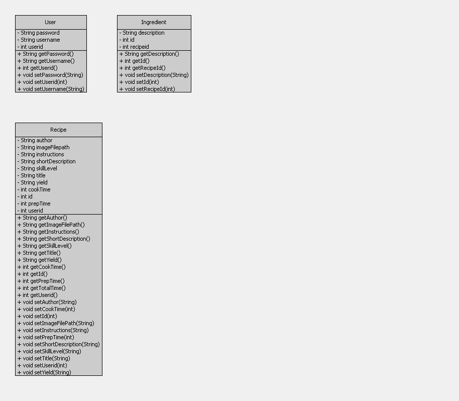
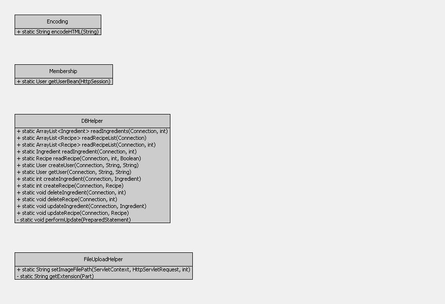

This page serves as the documentation page for My Recipe Manager. Recipe manager consists of a simple database driven web application that stores Recipes for users. Each user has the ability to login and create recipes. The design pattern that I'm using is a basic Model/View/Controller Design Pattern. Using this pattern I incorporate CRUD operations on each model. for example I have a Recipe Model that is used in The Create/Update/Delete/Read operations of the Recipe.
Recipes consist of Ingredients and other metadata such as instructions, yield, author etc. Each User can contain one or more Recipes. Each Recipe contains one or more Ingredients.
Source code can be found in My Github repository or in my tomcat folder on Hoare. On Each Webpage you'll have the option to view the various code components that make up the functionality of that web page.
The Models used are the business layer of the application. This will handle any business logic that must be incorporated. I did not put in any validation, but this is a good place for validation to live. I also separated the data layer from the model, but the data layer should also reside in the model environment. Below is a diagram of the model layer. The Controller will build a model using one of the following beans, and pass that information either to the view for display, or to the Database for storage. The Model consist of bean type classes.

The Controller handles all of the logistics for the application. There is one controller for each operation within each of the models. The Controllers are servlets. The controller will
retreive data from the database and build a model and pass that model a view. Or ther controller will get data from a view, build a model and pass that model to a database operation for storage.
Create
views are the display portion of the MVC design pattern, The consist of jsp pages that merely are a display medium. The data is retrieved from the controller and displayed using Standard core server tag libraries and html. there is a JSP page for each operation for each model. Operation Views
I am keeping database operations, String encoding, Fileupload helper utilities, and Membership utilities here.
